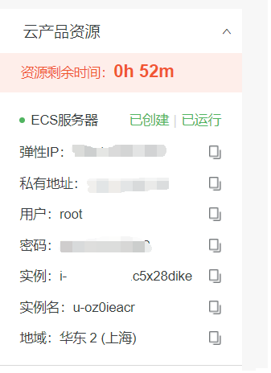
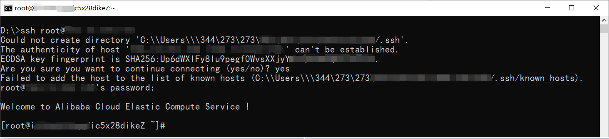
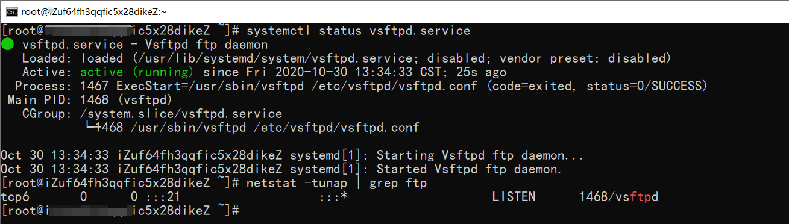
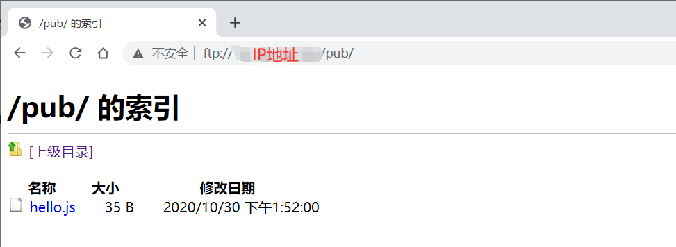
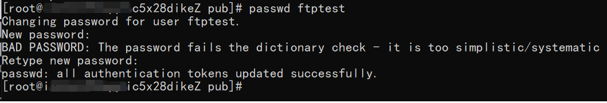
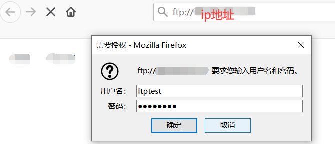
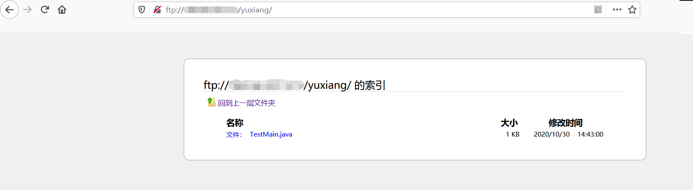
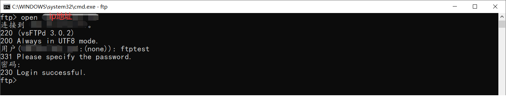
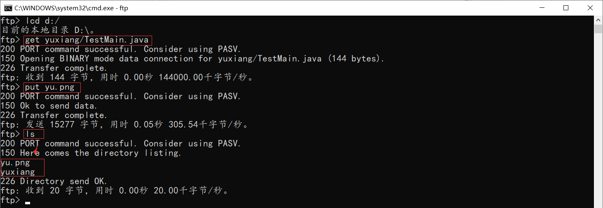

基于ECS，使用vsftpd搭建FTP服务
环境
- CentOS Linux release 7.3.1611
- vsftpd-3.0.2-27.el7.x86_64
前置知识
- chmod命令
Linux/Unix 的文件调用权限分为三级 : 文件所有者（Owner）、用户组（Group）、其它用户（Other Users）

语法&例子
1
2
3
4
5
6
7
8
9
| chmod [-cfvR] [--help] [--version] mode file...
# u：用户 g：组 o：其他 a：全部
# 将文件 file1.txt 设为所有人皆可读取
chmod ugo+r file1.txt # 或 chmod a+r file1.txt
# 也可以用数字代替 4=r，2=w，1=x
# 将目前目录下的所有文件与子目录皆设为任何人可读取
chmod 777 * # 或 chmod a+rwx *
|
- chown命令
Linux chown（英文全拼：change owner）命令用于设置文件所有者和文件关联组的命令。
Linux/Unix 是多人多工操作系统，所有的文件皆有拥有者。利用 chown 将指定文件的拥有者改为指定的用户或组，用户可以是用户名或者用户 ID，组可以是组名或者组 ID，文件是以空格分开的要改变权限的文件列表，支持通配符。
chown 需要超级用户 root 的权限才能执行此命令。
语法&例子
1
2
3
4
5
6
7
| chown [-cfhvR] [--help] [--version] user[:group] file...
# 将文件 file1.txt 的拥有者设为 yuxiang，群体的使用者 yuxianggroup
chown yuxiang:yuxianggroup file1.txt
# 将当前前目录下的所有文件与子目录的拥有者皆设为 yuxiang，群体的使用者 yuxianggroup
chown -R yuxiang:yuxianggroup *
# -R : 处理指定目录以及其子目录下的所有文件
|
- sed命令
Linux sed 命令是利用脚本来处理文本文件。
sed 可依照脚本的指令来处理、编辑文本文件。
Sed 主要用来自动编辑一个或多个文件、简化对文件的反复操作、编写转换程序等。
- ftp客户端命令
1
2
3
4
5
6
7
8
9
10
11
12
13
14
15
16
17
18
19
20
21
22
23
24
25
26
27
28
29
30
| #进入ftp客户端
ftp
#打开ftp服务器
>open xxx.xxx.xxx.xxx
#查看远程目录
>dir
#查看本地目录
>!dir
#指定本地目录
>lcd
#切换远程目录
>cd 目录
#上传文件
>put 文件名
#上传文件,支持*通配
>mput 文件名
#下载文件
>get 文件名
#下载文件,支持*通配
>mget 文件名
#删除远程文件
>delete 文件名
#退出服务器
>bye
|
开通、连接资源
阿里云ECS搭建FTP服务开通资源，免费体验。

连接 ：使用CMD、Powershell、Xshell等工具都可以。

安装、启动vsftpd
1
2
3
4
5
6
7
| # 1. 安装
yum install -y vsftpd
# 2. 运行
systemctl start vsftpd.service
# 3. 查看运行结果
systemctl status vsftpd.service
netstat -tunap | grep ftp
|

配置vsftpd
vsftpd（very secure FTP daemon）是一款在Linux发行版中最受推崇的FTP服务器。vsftpd支持匿名访问和本地用户模式两种访问方式。匿名访问方式任何用户都可以访问搭建的FTP服务；本地用户模式只支持添加的本地用户访问搭建的FTP服务。
说明: 匿名用户模式和本地用户模式只可同时配置一种。
匿名用户模式
- 修改配置文件vsftpd.conf。
1
| vim /etc/vsftpd/vsftpd.conf
|
将匿名长传权限anon_upload_enable=YES的注释解开。
- 退出编辑模式，输入
:wq保存并退出vim编辑器。
- 为FTP用户添加写权限。
- 重启服务。
1
| systemctl restart vsftpd.service
|
- 访问测试。
在/var/ftp/pub目录下创建hello.js文件
1
2
3
4
5
6
7
8
| [root@ic5x28dikeZ ~]# cd /var/ftp/pub/
[root@ic5x28dikeZ pub]# touch hello.js
[root@ic5x28dikeZ pub]# cat >> ./hello.js << EOF
> console.log('hello world vsftpd');
> EOF
[root@c5x28dikeZ pub]# cat hello.js
console.log('hello world vsftpd');
[root@ic5x28dikeZ pub]#
|

本地用户模式
- 为FTP服务创建一个Liunx用户。
1
2
3
4
| # 创建用户
adduser ftptest
# 设置密码
passwd ftptest
|

- 创建一个供FTP服务使用的文件目录。
- 更改/var/ftp/test目录的拥有者为ftptest.
1
| chowm -R ftptest:ftptest /var/ftp/test
|
- 修改/etc/vsftpd/vsftpd.conf配置文件。
FTP两种模式：主动模式、被动模式。详细可自行搜索。
1
2
3
4
5
6
7
8
| sed -i 's/anonymous_enable=YES/anonymous_enable=NO/' /etc/vsftpd/vsftpd.conf #禁止匿名登录FTP服务器
sed -i 's/listen=NO/listen=YES/' /etc/vsftpd/vsftpd.conf #监听IPv4 sockets
sed -i 's/listen_ipv6=YES/#listen_ipv6=YES/' /etc/vsftpd/vsftpd.conf #关闭监听IPv6 sockets
sed -i 's/#chroot_local_user=YES/chroot_local_user=YES/' /etc/vsftpd/vsftpd.conf #全部用户被限制在主目录
sed -i 's/#chroot_list_enable=YES/chroot_list_enable=YES/' /etc/vsftpd/vsftpd.conf #启用例外用户名单
sed -i 's/#chroot_list_file=/chroot_list_file=/' /etc/vsftpd/vsftpd.conf #指定例外用户列表文件，列表中的用户不被锁定在主目录
echo "allow_writeable_chroot=YES" >> /etc/vsftpd/vsftpd.conf
echo "local_root=/var/ftp/test" >> /etc/vsftpd/vsftpd.conf #设置本地用户登录后所在的目录
|
1
2
3
4
5
6
7
8
9
10
11
12
13
| sed -i 's/anonymous_enable=YES/anonymous_enable=NO/' /etc/vsftpd/vsftpd.conf #禁止匿名登录FTP服务器
sed -i 's/listen=NO/listen=YES/' /etc/vsftpd/vsftpd.conf #监听IPv4 sockets
sed -i 's/listen_ipv6=YES/#listen_ipv6=YES/' /etc/vsftpd/vsftpd.conf #关闭监听IPv6 sockets
sed -i 's/#chroot_local_user=YES/chroot_local_user=YES/' /etc/vsftpd/vsftpd.conf #全部用户被限制在主目录
sed -i 's/#chroot_list_enable=YES/chroot_list_enable=YES/' /etc/vsftpd/vsftpd.conf #启用例外用户名单
sed -i 's/#chroot_list_file=/chroot_list_file=/' /etc/vsftpd/vsftpd.conf #指定例外用户列表文件，列表中的用户不被锁定在主目录
echo "allow_writeable_chroot=YES" >> /etc/vsftpd/vsftpd.conf
echo "local_root=/var/ftp/test" >> /etc/vsftpd/vsftpd.conf #设置本地用户登录后所在的目录
echo "pasv_enable=YES" >> /etc/vsftpd/vsftpd.conf #开启被动模式
echo "pasv_address=<FTP服务器公网IP地址>" >> /etc/vsftpd/vsftpd.conf #本教程中为ECS服务器弹性IP
echo "pasv_min_port=20" >> /etc/vsftpd/vsftpd.conf #设置被动模式下，建立数据传输可使用的端口范围的最小值
echo "pasv_max_port=21" >> /etc/vsftpd/vsftpd.conf #设置被动模式下，建立数据传输可使用的端口范围的最大值
|
- 在/etc/vsftpd目录下创建chroot_list文件，并在在文件中写入例外用户名单。
1
2
3
4
5
| #使用vim命令编辑chroot_list文件，添加例外用户名单。此名单中的用户不会被锁定在主目录，可以访问其他目录。
vim /etc/vsftpd/chroot_list
# 添加用户
ftptest
# 保存退出
|
说明：没有例外用户时，也必须创建chroot_list文件，内容可为空。
- 重启服务。
1
| systemctl restart vsftpd.service
|
- 测试。
浏览器访问测试。
1
2
3
4
5
6
7
8
9
10
11
12
13
14
| [root@iicxcxq7nz test]# touch TestMain.java
[root@iicxcxq7nz test]# cat >> ./TestMain.java << EOF
> public class TestMain {
> public static void main(String agrs[]) {
> System.out.println('hello vsftpd user');
> }
> }
> EOF
[root@iicxcxq7nz test]# tree /var/ftp/test/
test/
└── yuxiang
└── TestMain.java
1 directory, 1 file
|


ftp工具上传测试。

